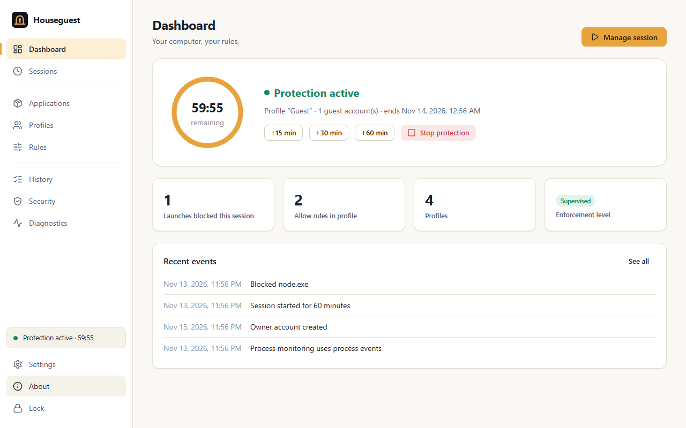

Empreste seu PC sem emprestar sua vida.
O Houseguest é um bloqueador de aplicativos open-source para sessões de convidado no Windows. Escolha exatamente quais programas uma conta de convidado pode executar, pelo tempo que você decidir. Um serviço do Windows aplica as regras, então fechar a janela não muda nada.

O que faz
- Sessões de convidado com cronômetro, perfis prontos e prévia antes de iniciar.
- Regras por caminho, hash ou fabricante.
- Nunca bloqueia você: processos essenciais do Windows e o próprio Houseguest são sempre permitidos; um administrador sempre pode recuperar ou desinstalar.
- Ícone na área de notificação, tema claro e escuro do Windows, sem telemetria.
Limites
A aplicação é reativa, não preventiva: um programa bloqueado pode rodar por um instante antes de ser encerrado. Verificado até agora apenas no Windows 10 Pro 22H2. Veja a FAQ (em inglês) e o modelo de ameaças.